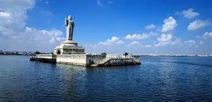

Charminar
- Distance from City Centre : 4 km
- Nearest Metro Station : Osmania Medical College Metro Station (3.9 km)
- Place Type : Monument
- Ideal for : Family & Friends
The iconic symbol of Hyderabad, the very well known Charminar is located in the Old City. It was built by Sultan Mohammed Quli Qutb Shah in 1591 in the honor of his wife Bhagmati.
Know More
Golconda Fort
- Distance from City Centre : 9.7 km
- Nearest Metro Station : Jubilee Hills Check Post Metro Station (2.8 km)
- Place Type : Fort, Monument, Heritage
- Ideal for : Family, Kids & Friends
Built by Qutub Shahi Kings, Golconda fort presents an impressive structure, with eight gates and 87 bastions.
Know More

Hussain Sagar Lake
- Distance from City Centre : 6.5 km
- Nearest Metro Station : Irrum Manzil Metro Station (2.7 km), Lakdikapul Metro Station (3.1 km)
- Place Type : Lake Front, Scenic Drive
- Ideal for : Family, Kids, Couple & Friends
A tranquil artificial lake with a massive Buddha statue, ideal for boating and relaxation. Connecting the twin cities, Hussain Sagar Lake boasts of being the largest artificial lake in Asia.
Know MoreRamoji Film City
- Distance from City Centre : 26 km
- Nearest Metro Station : L.B. Nagar Metro Station (16.6 km)
- Place Type : Film Studio, Amusement & Theme Park
- Ideal for : Family, Kids, Couple & Friends
Since 1991, Ramoji Film City has been attracting tourists from every corner of the country. One of the largest film studios in the world, it has the capacity to house almost 50 film units.
Know More